Code
flowchart LR
A[AP calculus in HS] --> U[University]
A --> P[Pass calculus]
U --> Pflowchart LR A[AP calculus in HS] --> U[University] A --> P[Pass calculus] U --> P
Study design, two-group inference, and comparing more than two groups
This reading is your self-paced textbook for Module 4. It has three sections. Work one section at a time and use the Check yourself box at the end of each before Quiz A.
Whenever I see a difference between the groups in the data, I first ask which of three explanations could produce it: it could be by chance, it could be a real causal effect, or it could be confounding. A randomized controlled trial removes confounding as an explanation (random assignment balances other variables), and a small p-value lets me set aside the by-chance explanation. What is left is the causal explanation.
lm) for a numerical response, and a chi-square test of independence for a binary or categorical response. Project 4 stays a two-group comparison, so this section is for awareness and your methods map.After this reading you should be able to:
t.test() for two independent numerical groups or prop.test() / chisq.test() for binary comparisons, and name the conditions that match the methods map.lm() then anova()) for a numerical response across three or more groups.chisq.test()) for a binary or categorical response across three or more groups, and distinguish it from a goodness-of-fit test.Project 4 asks you to design a fair comparison between two groups. This section gives you the vocabulary: EV, RV, RCT vs observational, confounding, and what a p-value can and cannot tell you about causation.
A causal question asks about the effect of one thing on another, and it has two roles:
Some research questions, with the two variables identified:
When you write your own question, define each variable precisely: say how it is measured and any cutoffs (pass/fail, hours of sleep, income in dollars). Vague labels make design and analysis untrustworthy.
Suppose a state has two polytechnic universities, Timber Ridge and Wild Horse, and the Chancellor’s Office wants to know which one does a better job teaching calculus to incoming freshmen.
This example is a modification of a story in Pearl, Judea, and Dana Mackenzie, The Book of Why: The New Science of Cause and Effect (Basic Books, 2018).
Each school has a calculus class of 200 students. Here are the crude pass rates:
| Passed calculus | |
|---|---|
| Timber Ridge | 150/200 (75%) |
| Wild Horse | 154/200 (77%) |
At first glance Wild Horse looks a little better, 154 passing versus 150. Before reading on, ask yourself: what could make these two numbers differ?
Maybe the difference in number passing is just by chance? This is only out of 200 students at each university.
Or maybe Wild Horse does a slightly better job and the different in passing rates reflects this causation.
Or maybe this is not a fair comparison: what if the backgrounds of the student populations at the two universities are different?
Suppose we also learn how many students in each school had already taken AP Calculus in high school, and we split the table by that:
| AP calculus | No AP calculus | Combined | |
|---|---|---|---|
| Timber Ridge | 45/50 (90%) | 105/150 (70%) | 150/200 (75%) |
| Wild Horse | 136/170 (80%) | 18/30 (60%) | 154/200 (77%) |
Each cell shows the number who passed out of the number of students in that cell. Read down each column, comparing the two schools among students with the same preparation:
So within each level of preparation Timber Ridge actually does better, even though its crude rate looked worse. The comparison flipped once we accounted for AP background (a reversal known as Simpson’s paradox).
Why did it flip? Wild Horse enrolled far more students who had already taken AP calculus (170 of 200 versus 50 of 200), and AP students pass at higher rates no matter which school they attend. So Wild Horse’s higher crude rate came partly from starting with better-prepared students, not from better teaching.
That leaves three possible reasons the crude numbers differ at all:
That third variable, AP background, is an example of a confounder: it influences both which school a student attends and whether they pass. A directed acyclic graph (DAG) is an easy way to spot one. Draw an arrow from each variable to whatever it influences; a confounder is any variable with arrows pointing into both the explanatory variable and the response.
flowchart LR
A[AP calculus in HS] --> U[University]
A --> P[Pass calculus]
U --> Pflowchart LR A[AP calculus in HS] --> U[University] A --> P[Pass calculus] U --> P
One clean way to get rid of a confounder is to make the groups have the same mix of it. If we could randomly assign incoming students to the two universities, AP background, and everything else, would end up balanced across the schools on average, and a crude comparison would be fair. But we cannot ethically or practically assign students to a university, so we are stuck comparing groups that formed on their own and must deal with AP background after the fact (for example by comparing within the AP and no-AP groups). The next part puts names to these two situations.
With the story in mind, here is the vocabulary.
Internal validity is how well a study rules out alternative explanations for a difference between its own groups. Because random assignment removes confounding, an RCT has high internal validity; an observational study has to earn it through careful design and analysis.
More examples, and a caution about what is not a confounder:
flowchart LR
U2[University] --> T[Tutoring center use]
U2 --> P2[Pass calculus]
T --> P2flowchart LR U2[University] --> T[Tutoring center use] U2 --> P2[Pass calculus] T --> P2
A backdoor path is a non-causal route connecting EV and RV through a common cause, in the story \(U \leftarrow A \rightarrow P\) (university \(U\), AP background \(A\), passing \(P\)). Comparing schools within the AP and no-AP groups (subclassification, also called stratification) blocks that path. You can trace backdoor paths by hand or use DAGitty to suggest adjustment sets under an assumed graph. Always ask whether your DAG includes every important common cause; unmeasured confounders (motivation, SES) can remain, which is why an RCT, when feasible, is so valuable.
Putting it together, whenever two groups differ there are three explanations to weigh:
A hypothesis test and its p-value (Section 2) address the by-chance explanation only. An RCT removes confounding by design, leaving just chance and causation, so there a small p-value points to causation. An observational study leaves all three on the table, so you reason about confounding with DAGs and address measured confounders with subclassification.
A DAG with a confounder has three arrows: confounder to group, confounder to outcome, and group to outcome. Each arrow shows up as an association you can plot and summarize with Module 3 tools. Below we simulate a treatment comparison where age group is a confounder, then look at all three arrows. Older patients are sicker (lower outcome) and, in the observational data, are more likely to receive Treatment B.
if (!requireNamespace("tidyverse", quietly = TRUE)) {
install.packages("tidyverse", repos = "https://cloud.r-project.org")
}
library(tidyverse)
set.seed(2024)
N <- 300
# Confounder: age group (younger / older), about half and half
age_group <- sample(c("younger", "older"), N, replace = TRUE, prob = c(0.5, 0.5))
# Arrow 1 (confounder -> group): older patients are more likely to get Treatment B
p_B <- ifelse(age_group == "older", 0.75, 0.25)
treatment <- ifelse(rbinom(N, 1, p_B) == 1, "B", "A")
# Arrow 2 (confounder -> outcome): older patients have lower outcomes.
# Arrow 3 (group -> outcome): Treatment B has a small TRUE benefit of +3.
outcome <- 70 - 12 * (age_group == "older") + 3 * (treatment == "B") + rnorm(N, 0, 6)
conf <- tibble(
age_group = factor(age_group, levels = c("younger", "older")),
treatment = factor(treatment, levels = c("A", "B")),
outcome = outcome
)
glimpse(conf)Rows: 300
Columns: 3
$ age_group <fct> younger, older, younger, younger, older, younger, older, old…
$ treatment <fct> A, B, A, A, A, A, A, B, A, A, A, A, A, A, B, A, B, B, B, B, …
$ outcome <dbl> 74.26722, 57.20574, 68.09254, 76.40501, 67.55353, 72.69615, …Arrow 1, confounder to group. The age mix is different in the two treatment groups, so the groups are not comparable at baseline.
conf |> count(treatment, age_group)# A tibble: 4 × 3
treatment age_group n
<fct> <fct> <int>
1 A younger 101
2 A older 47
3 B younger 41
4 B older 111conf |>
count(treatment, age_group) |>
ggplot(aes(x = treatment, y = n, fill = age_group)) +
geom_col(position = "fill", color = "white") +
labs(title = "Arrow 1: age mix differs by treatment group (confounder to group)",
x = "Treatment", y = "Proportion", fill = "Age group")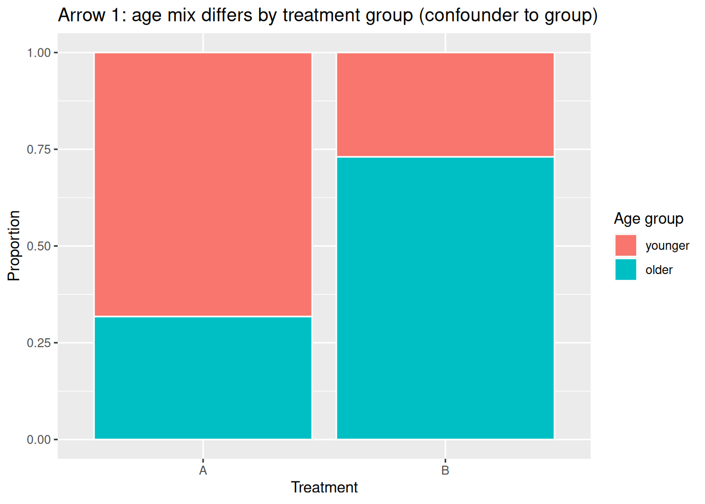
Arrow 2, confounder to outcome. Ignoring treatment, older patients have lower outcomes.
conf |>
group_by(age_group) |>
summarize(n = n(), mean_outcome = mean(outcome), sd_outcome = sd(outcome))# A tibble: 2 × 4
age_group n mean_outcome sd_outcome
<fct> <int> <dbl> <dbl>
1 younger 142 70.7 6.15
2 older 158 60.4 5.88ggplot(conf, aes(x = age_group, y = outcome)) +
geom_boxplot() +
labs(title = "Arrow 2: outcome depends on age group (confounder to outcome)",
x = "Age group", y = "Outcome")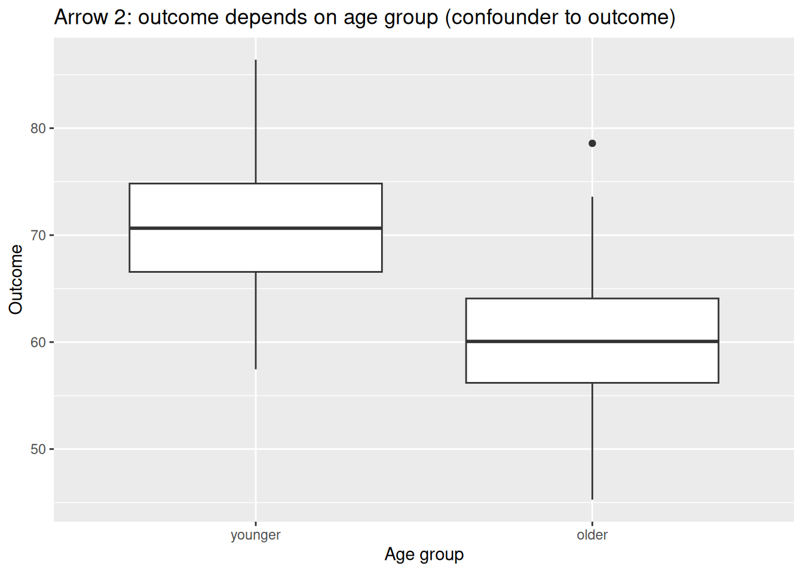
Arrow 3, the crude group-to-outcome comparison. Because older (sicker) patients were more likely to get B, the crude comparison is biased against B, even though B truly helps a little.
conf |>
group_by(treatment) |>
summarize(n = n(), mean_outcome = mean(outcome), sd_outcome = sd(outcome))# A tibble: 2 × 4
treatment n mean_outcome sd_outcome
<fct> <int> <dbl> <dbl>
1 A 148 66.3 8.25
2 B 152 64.3 7.48ggplot(conf, aes(x = treatment, y = outcome)) +
geom_boxplot() +
labs(title = "Arrow 3: crude outcome by treatment (confounded comparison)",
x = "Treatment", y = "Outcome")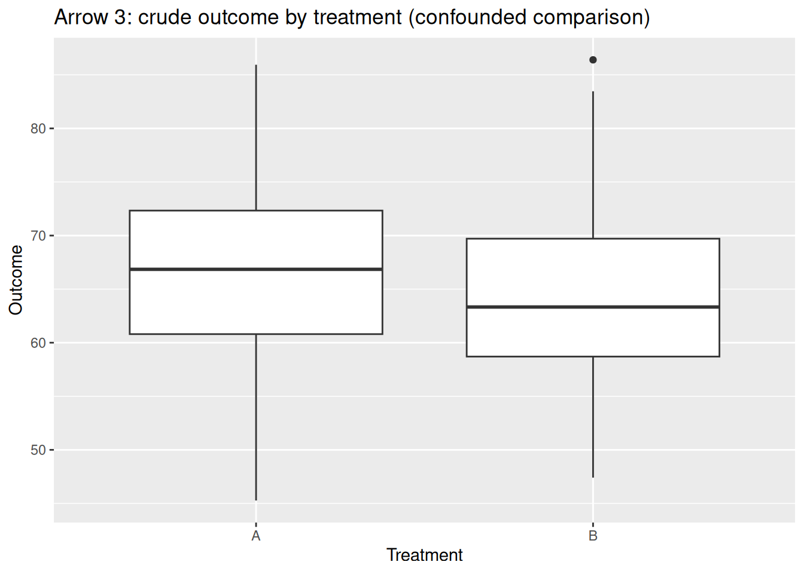
t.test(outcome ~ treatment, data = conf, var.equal = FALSE)
Welch Two Sample t-test
data: outcome by treatment
t = 2.2036, df = 293.41, p-value = 0.02833
alternative hypothesis: true difference in means between group A and group B is not equal to 0
95 percent confidence interval:
0.2143178 3.7964894
sample estimates:
mean in group A mean in group B
66.27307 64.26767 The crude p-value can be small while pointing the wrong way: B looks worse than A because of the age imbalance, not because B is harmful. The test removed the by-chance explanation, but confounding remains.
Now keep the same people and the same age-to-outcome arrow, but assign treatment at random. Random assignment erases arrow 1 (the confounder no longer drives group membership), so age is balanced across groups and the crude comparison becomes fair.
set.seed(2025)
treatment_rct <- sample(c("A", "B"), N, replace = TRUE) # random assignment, ignores age
outcome_rct <- 70 - 12 * (age_group == "older") + 3 * (treatment_rct == "B") + rnorm(N, 0, 6)
rct <- tibble(
age_group = factor(age_group, levels = c("younger", "older")),
treatment = factor(treatment_rct, levels = c("A", "B")),
outcome = outcome_rct
)
# Arrow 1 is now gone: age mix is about equal in both groups
rct |> count(treatment, age_group)# A tibble: 4 × 3
treatment age_group n
<fct> <fct> <int>
1 A younger 62
2 A older 73
3 B younger 80
4 B older 85rct |>
count(treatment, age_group) |>
ggplot(aes(x = treatment, y = n, fill = age_group)) +
geom_col(position = "fill", color = "white") +
labs(title = "Randomized: age mix is balanced across groups (arrow 1 removed)",
x = "Treatment", y = "Proportion", fill = "Age group")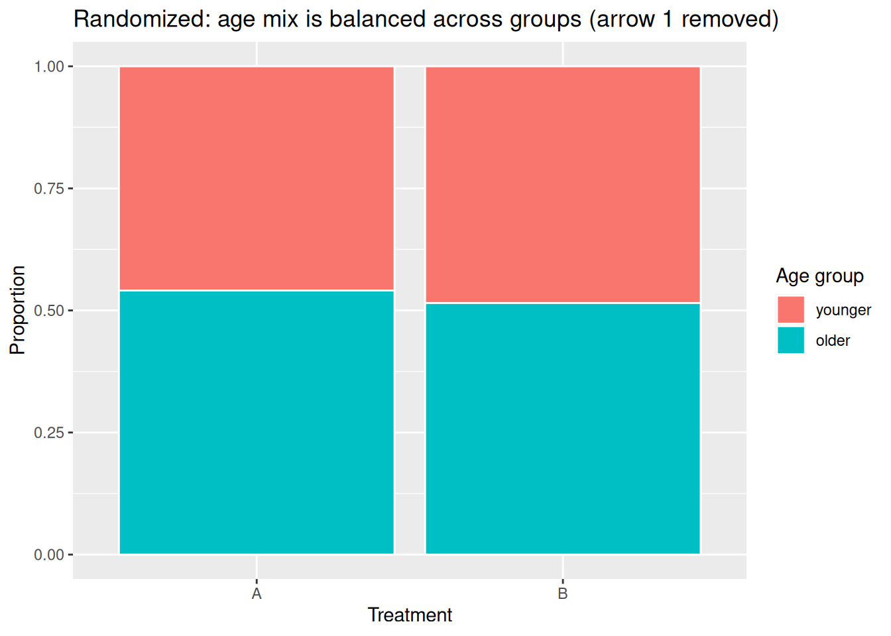
# Crude comparison now recovers the true +3 benefit of B
rct |>
group_by(treatment) |>
summarize(n = n(), mean_outcome = mean(outcome), sd_outcome = sd(outcome))# A tibble: 2 × 4
treatment n mean_outcome sd_outcome
<fct> <int> <dbl> <dbl>
1 A 135 63.8 7.89
2 B 165 67.1 8.37t.test(outcome ~ treatment, data = rct, var.equal = FALSE)
Welch Two Sample t-test
data: outcome by treatment
t = -3.5367, df = 292.03, p-value = 0.0004711
alternative hypothesis: true difference in means between group A and group B is not equal to 0
95 percent confidence interval:
-5.181136 -1.476314
sample estimates:
mean in group A mean in group B
63.75346 67.08218 With arrow 1 removed, arrow 2 (age to outcome) still exists, but age is spread evenly across the groups, so it no longer biases the comparison. The crude difference in means now estimates the real effect of treatment, and a small p-value supports a causal conclusion.
A final caution: do not confuse random assignment with random sampling.
A study can use one, both, or neither. Random assignment supports causal claims inside the study; random sampling supports generalizing beyond it. When an RCT is impossible or unethical (you cannot randomly assign people to smoke for 20 years), you are back to an observational design and must reason about confounding with DAGs and subclassification.
Design (Section 1) decides whether a difference can be called causal. This section handles the by-chance explanation. A hypothesis test asks: if the two groups were really the same, how surprising is a difference this large? The p-value answers that. A 95 percent confidence interval estimates how big the difference is, with an interval of plausible values.
The first decision is the parameter of interest, and it follows from the response variable type:
prop.test() or, equivalently, a chi-square test of independence.| Response variable | Plot (Module 3) | Summaries | Test | CI | Conditions (match the methods map) |
|---|---|---|---|---|---|
| Numerical | Boxplot per group | Group \(n\), mean, SD | t.test(y ~ group, var.equal = FALSE) |
two-sample t-interval from same call | Two samples or random assignment; independent observations; each group large or roughly normal/symmetric |
| Binary | 100% stacked bar | Group counts and proportions | prop.test(tab) or chisq.test(tab) |
two-proportion CI from prop.test |
Independent observations; all expected counts at least 5 (for the z/chi-square approximation) |
For paired or matched data, use the paired versions instead (covered below).
Scenario. In a sleep study, 30 volunteers are randomly assigned to a deprived group (4 hours) or a rested group (8 hours). The next morning each completes a reaction-time task (lower is better, in milliseconds). Because assignment was random, this is an RCT, so confounding is removed by design and we only need to address the by-chance explanation.
Parameter of interest: the difference in mean reaction time, \(\mu_\text{deprived} - \mu_\text{rested}\).
library(tidyverse)
set.seed(11)
sleep_rt <- tibble(
group = rep(c("deprived", "rested"), each = 15),
rt = c(rnorm(15, mean = 420, sd = 40),
rnorm(15, mean = 370, sd = 40))
)
# Module 3 summaries: n, mean, SD per group
sleep_rt |>
group_by(group) |>
summarize(n = n(), mean_rt = mean(rt), sd_rt = sd(rt))# A tibble: 2 × 4
group n mean_rt sd_rt
<chr> <int> <dbl> <dbl>
1 deprived 15 403. 36.6
2 rested 15 361. 19.3# Module 3 plot: boxplot per group
ggplot(sleep_rt, aes(x = group, y = rt)) +
geom_boxplot() +
labs(title = "Reaction time by sleep group", x = "Group", y = "Reaction time (ms)")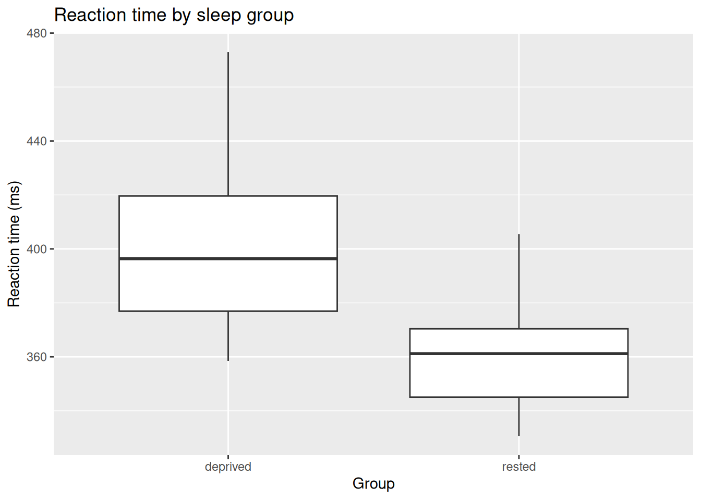
t.test(rt ~ group, data = sleep_rt, var.equal = FALSE)
Welch Two Sample t-test
data: rt by group
t = 3.9333, df = 21.223, p-value = 0.0007495
alternative hypothesis: true difference in means between group deprived and group rested is not equal to 0
95 percent confidence interval:
19.82771 64.25533
sample estimates:
mean in group deprived mean in group rested
402.8768 360.8352 How to read the output:
Conditions (from the methods map): independent observations and random assignment hold by design; with 15 per group and roughly symmetric data, the t-approximation is reasonable. Always check the boxplot for strong skew or extreme outliers first.
Hypotheses: \(H_0: \mu_1 = \mu_2\) versus \(H_a: \mu_1 \neq \mu_2\).
Test statistic (standardized difference in means):
\[ t = \frac{\bar{x}_1 - \bar{x}_2}{\sqrt{\dfrac{s_1^2}{n_1} + \dfrac{s_2^2}{n_2}}} \]
Under \(H_0\) this follows a \(t\) distribution (Welch-Satterthwaite degrees of freedom). The two-sided p-value is the shaded area beyond \(\pm|t|\).
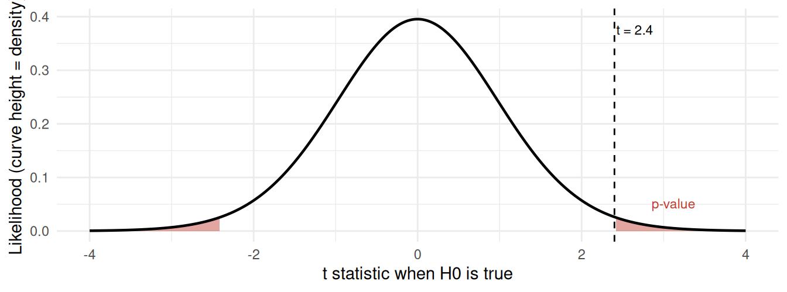
Conditions (methods map): independent observations (two independent samples or random assignment); each group large or roughly normal/symmetric.
You cannot turn this \(t\) into a p-value by hand: the p-value is the shaded area under the curve. Use R (t.test(..., var.equal = FALSE)); before computers, people read it from a printed \(t\)-table.
Scenario. A vaccine trial randomly assigns 200 volunteers to vaccine or placebo and records whether each person caught the flu that season (yes/no). The response is binary, so the parameter of interest is the difference in infection proportions, \(p_\text{vaccine} - p_\text{placebo}\).
library(tidyverse)
set.seed(7)
vax <- tibble(
group = rep(c("vaccine", "placebo"), each = 100),
flu = c(rbinom(100, 1, 0.10), rbinom(100, 1, 0.30))
) |>
mutate(flu = factor(ifelse(flu == 1, "flu", "no flu"), levels = c("flu", "no flu")))
# Module 3 summaries: counts and infection rate per group
vax |>
group_by(group) |>
summarize(n = n(), flu_count = sum(flu == "flu"), flu_rate = mean(flu == "flu"))# A tibble: 2 × 4
group n flu_count flu_rate
<chr> <int> <int> <dbl>
1 placebo 100 39 0.39
2 vaccine 100 11 0.11# Module 3 plot: 100% stacked bar
ggplot(vax, aes(x = group, fill = flu)) +
geom_bar(position = "fill") +
labs(title = "Flu rate by group", x = "Group", y = "Proportion", fill = "Outcome")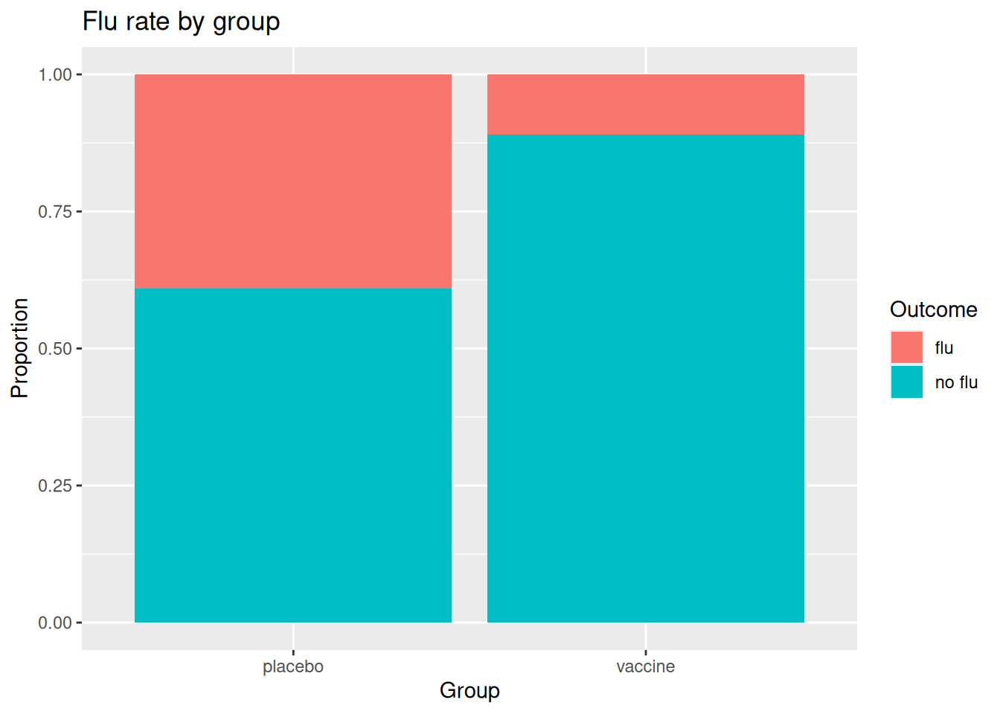
tab <- table(vax$group, vax$flu)
tab
flu no flu
placebo 39 61
vaccine 11 89prop.test(tab) # difference in proportions, with 95% CI
2-sample test for equality of proportions with continuity correction
data: tab
X-squared = 19.44, df = 1, p-value = 1.038e-05
alternative hypothesis: two.sided
95 percent confidence interval:
0.1564235 0.4035765
sample estimates:
prop 1 prop 2
0.39 0.11 chisq.test(tab) # equivalent test of independence for a 2x2 table
Pearson's Chi-squared test with Yates' continuity correction
data: tab
X-squared = 19.44, df = 1, p-value = 1.038e-05prop.test() reports the two group proportions, a p-value, and a 95 percent CI for \(p_1 - p_2\). chisq.test() gives the same conclusion as a test of independence; use chisq.test(tab)$expected to confirm the condition that all expected counts are at least 5. For a 2x2 table the two tests agree.
For a 2x2 comparison of a binary outcome between two groups, prop.test(tab) and chisq.test(tab) test the same null (no association between group and outcome) and reach the same conclusion. Report prop.test() when you also want the CI for \(p_1 - p_2\). Condition: independent observations and all expected counts at least 5.
Hypotheses: \(H_0: p_1 = p_2\) versus \(H_a: p_1 \neq p_2\).
Test statistic (pooled two-proportion z):
\[ z = \frac{\hat{p}_1 - \hat{p}_2}{\sqrt{\hat{p}(1 - \hat{p})\left(\dfrac{1}{n_1} + \dfrac{1}{n_2}\right)}}, \qquad \hat{p} = \frac{x_1 + x_2}{n_1 + n_2} \]
Under \(H_0\), \(z\) follows a standard normal distribution; prop.test() reports the equivalent \(\chi^2 = z^2\). The two-sided p-value is the shaded area beyond \(\pm|z|\).
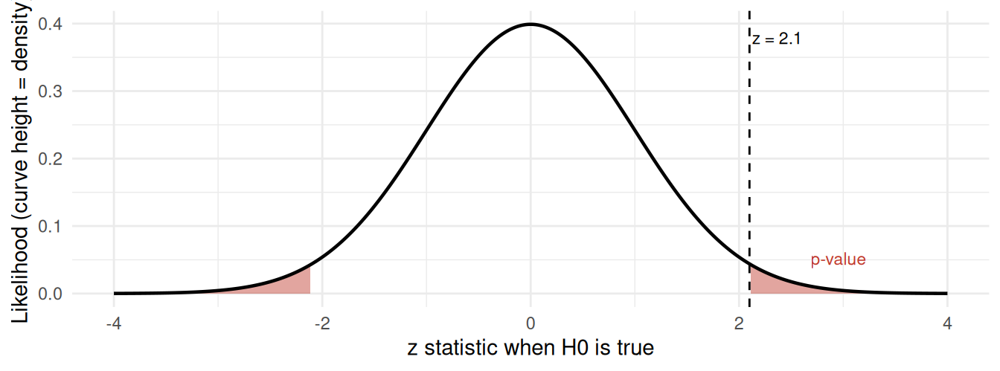
Conditions (methods map): independent observations; all expected counts at least 5.
You cannot turn this \(z\) into a p-value by hand; use R (prop.test() / chisq.test()), or in olden times a printed normal (or \(\chi^2\)) table.
Sometimes the two measurements are linked: the same unit measured twice (before/after), or units matched into pairs. Then the observations are not independent across groups, and the independent-samples tests above do not apply. Use the paired versions, which analyze the within-pair differences.
Numerical outcome, paired t-test. Example: blood pressure for 12 patients, before and after a program. Test the mean of the before-minus-after differences.
library(tidyverse)
set.seed(3)
bp <- tibble(
patient = 1:12,
before = rnorm(12, 150, 10),
after = rnorm(12, 142, 10)
)
bp |> summarize(mean_before = mean(before), mean_after = mean(after),
mean_change = mean(before - after))# A tibble: 1 × 3
mean_before mean_after mean_change
<dbl> <dbl> <dbl>
1 148. 139. 9.37t.test(bp$before, bp$after, paired = TRUE)
Paired t-test
data: bp$before and bp$after
t = 3.298, df = 11, p-value = 0.007103
alternative hypothesis: true mean difference is not equal to 0
95 percent confidence interval:
3.115704 15.617766
sample estimates:
mean difference
9.366735 Let \(d_i\) be the within-pair differences (for example before minus after). Hypotheses: \(H_0: \mu_d = 0\) versus \(H_a: \mu_d \neq 0\).
Test statistic:
\[ t = \frac{\bar{d}}{s_d / \sqrt{n}} \]
Under \(H_0\) this follows a \(t\) distribution with \(n - 1\) degrees of freedom. The two-sided p-value is the shaded area beyond \(\pm|t|\).
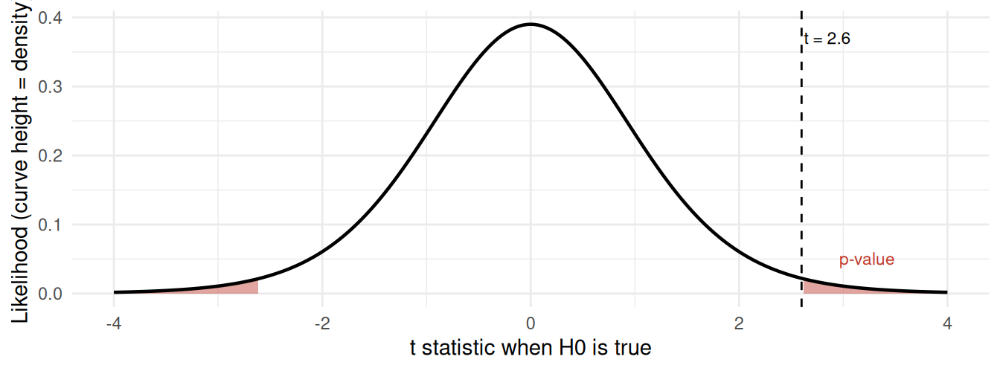
Conditions (methods map): pairs are independent of each other; the within-pair differences are roughly normal or \(n\) is large.
You cannot turn this \(t\) into a p-value by hand; use R (t.test(x, y, paired = TRUE)), or in olden times a printed \(t\)-table.
Binary outcome, McNemar’s test. Example: 80 people rated a policy support yes/no before and after a debate. The 2x2 table cross-classifies each person’s before and after answers; McNemar’s test uses only the people who switched.
support <- matrix(c(20, 25, 10, 25),
nrow = 2, byrow = TRUE,
dimnames = list(before = c("yes", "no"),
after = c("yes", "no")))
support after
before yes no
yes 20 25
no 10 25mcnemar.test(support)
McNemar's Chi-squared test with continuity correction
data: support
McNemar's chi-squared = 5.6, df = 1, p-value = 0.01796For paired binary data, let \(b\) and \(c\) be the two discordant counts (the pairs that switched, for example yes-then-no and no-then-yes). Hypotheses: \(H_0\): the two marginal rates are equal (no net change) versus \(H_a\): they differ.
Test statistic:
\[ \chi^2 = \frac{(b - c)^2}{b + c} \]
Under \(H_0\) this follows a \(\chi^2\) distribution with 1 degree of freedom. Because \(\chi^2 \ge 0\), the p-value is the upper-tail shaded area.
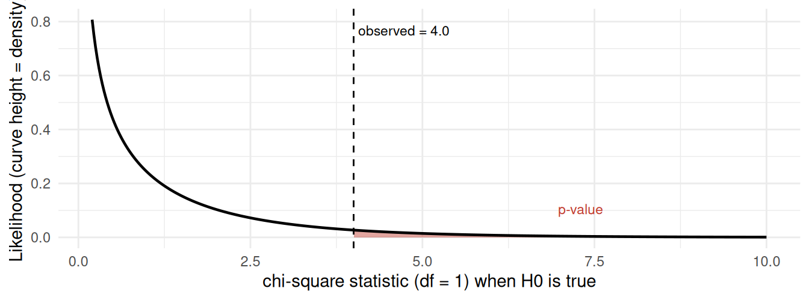
Conditions (methods map): paired binary observations; enough discordant pairs (\(b + c\) not too small).
You cannot turn this \(\chi^2\) into a p-value by hand; use R (mcnemar.test()), or in olden times a printed \(\chi^2\) table.
Independence vs paired is a design question, not a data question. Ask: was each value in group 1 produced by the same unit (or a matched partner) as a specific value in group 2? If yes, the data are paired and you use the paired test; if the two groups are separate, unrelated units, use the independent-samples test.
You can also address the by-chance explanation by simulation: shuffle the group labels many times, recompute the difference, and see how often a difference as large as the observed one appears by chance alone. The free Rossman-Chance applets let you do this for both means and proportions, and the demo labs show the same idea in R with set.seed() and resampling.
prop.test/chisq.test; conditions: independent observations, all expected counts at least 5. Observational means a significant result shows association, not causation.Project 4 stays a single two-group comparison (one binary explanatory contrast). This section is for awareness and your methods map, so you recognize the right tool when there are three or more groups.
The three-explanations logic does not change with more groups: a test and p-value handle the by-chance explanation. Only the test changes, because comparing three or more group means at once with many t-tests inflates the chance of a Type I error (false discovery).
One-way ANOVA tests whether all group means are equal: \(H_0: \mu_1 = \mu_2 = \cdots = \mu_k\). Fit a linear model with lm() and read the overall test with anova().
library(tidyverse)
PlantGrowth |>
group_by(group) |>
summarize(n = n(), mean_weight = mean(weight), sd_weight = sd(weight))# A tibble: 3 × 4
group n mean_weight sd_weight
<fct> <int> <dbl> <dbl>
1 ctrl 10 5.03 0.583
2 trt1 10 4.66 0.794
3 trt2 10 5.53 0.443ggplot(PlantGrowth, aes(x = group, y = weight)) +
geom_boxplot() +
labs(title = "Plant weight by treatment group", x = "Group", y = "Weight")
fit <- lm(weight ~ group, data = PlantGrowth)
anova(fit)Analysis of Variance Table
Response: weight
Df Sum Sq Mean Sq F value Pr(>F)
group 2 3.7663 1.8832 4.8461 0.01591 *
Residuals 27 10.4921 0.3886
---
Signif. codes: 0 '***' 0.001 '**' 0.01 '*' 0.05 '.' 0.1 ' ' 1The anova() p-value tests whether any group mean differs. Conditions (from the methods map): independent observations, roughly normal within groups, and similar spread across groups. A small p-value says at least one group differs; follow-up comparisons say which.
Hypotheses: \(H_0: \mu_1 = \mu_2 = \cdots = \mu_k\) versus \(H_a\): at least one group mean differs.
Test statistic (between-group variability over within-group variability):
\[ F = \frac{\text{MS}_\text{between}}{\text{MS}_\text{within}} \]
Under \(H_0\) this follows an \(F\) distribution with \(k - 1\) and \(N - k\) degrees of freedom. Because \(F \ge 0\), the p-value is the upper-tail shaded area.
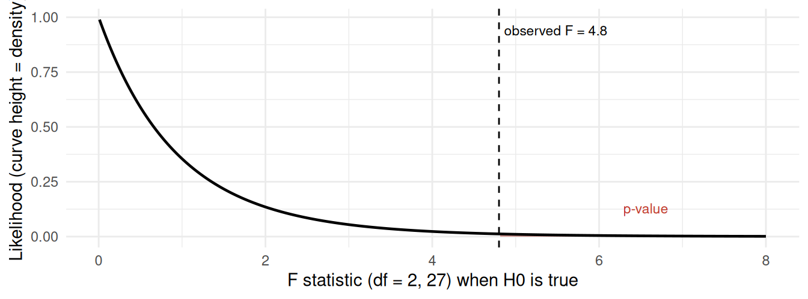
Conditions (methods map): independent observations; roughly normal within groups; similar spread across groups.
You cannot turn this \(F\) into a p-value by hand; use R (lm() then anova()), or in olden times a printed \(F\) table.
When the response is binary (or categorical) and you compare three or more groups, cross-classify group and outcome in a contingency table and run a chi-square test of independence with chisq.test(). It tests \(H_0\): the outcome rate is the same in every group (group and outcome are independent).
set.seed(5)
clinic <- tibble(
clinic = factor(rep(c("A", "B", "C"), each = 60)),
recovered = c(rbinom(60, 1, 0.5), rbinom(60, 1, 0.65), rbinom(60, 1, 0.8))
)
clinic |>
group_by(clinic) |>
summarize(n = n(), recovered_rate = mean(recovered))# A tibble: 3 × 3
clinic n recovered_rate
<fct> <int> <dbl>
1 A 60 0.467
2 B 60 0.617
3 C 60 0.767ggplot(clinic, aes(x = clinic, fill = factor(recovered, labels = c("no", "yes")))) +
geom_bar(position = "fill") +
labs(title = "Recovery rate by clinic", x = "Clinic", y = "Proportion", fill = "Recovered")
tab <- table(clinic$clinic, factor(clinic$recovered, labels = c("no", "yes")))
tab
no yes
A 32 28
B 23 37
C 14 46chisq.test(tab)$expected # all should be >= 5
no yes
A 23 37
B 23 37
C 23 37chisq.test(tab)
Pearson's Chi-squared test
data: tab
X-squared = 11.422, df = 2, p-value = 0.00331Conditions (from the methods map): independent observations and all expected counts at least 5 (check with chisq.test(tab)$expected). A small p-value says the recovery rate differs across at least one clinic.
Hypotheses: \(H_0\): group and outcome are independent (equal outcome rates across groups) versus \(H_a\): they are associated.
Test statistic (observed vs expected counts):
\[ \chi^2 = \sum \frac{(O - E)^2}{E} \]
Under \(H_0\) this follows a \(\chi^2\) distribution with \((r - 1)(c - 1)\) degrees of freedom. Because \(\chi^2 \ge 0\), the p-value is the upper-tail shaded area.
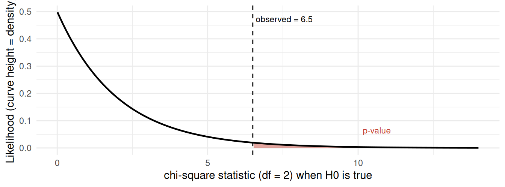
Conditions (methods map): independent observations; all expected counts at least 5 (check with chisq.test(tab)$expected).
You cannot turn this \(\chi^2\) into a p-value by hand; use R (chisq.test()), or in olden times a printed \(\chi^2\) table.
Two chi-square tests, two different questions. Both use the same statistic, so it helps to keep them straight:
When the table is just 2 groups by 2 outcomes, the chi-square test of independence tests the same null as the two-sample prop.test(), namely equal outcome proportions in the two groups (\(p_1 = p_2\)), and with correct = FALSE the two give the same p-value. Use prop.test() when you also want the confidence interval for \(p_1 - p_2\); reach for chisq.test() once there are more than two groups (or more than two outcome categories), where a single difference in proportions no longer summarizes the comparison.
fit <- lm(y ~ group) then anova(fit).chisq.test(tab) (expected counts at least 5). It tests independence, equal outcome rates across groups; a goodness-of-fit test instead checks one categorical variable against a claimed set of proportions.prop.test() (identical p-value with correct = FALSE).lm then anova); show a boxplot of recovery time per hospital first.